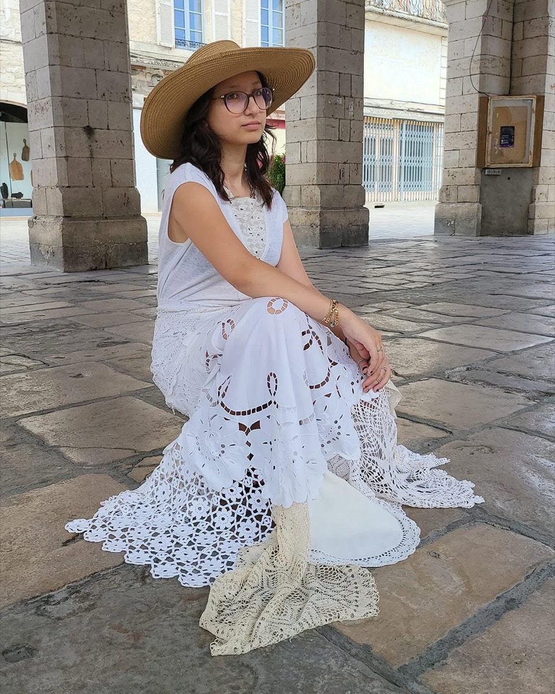
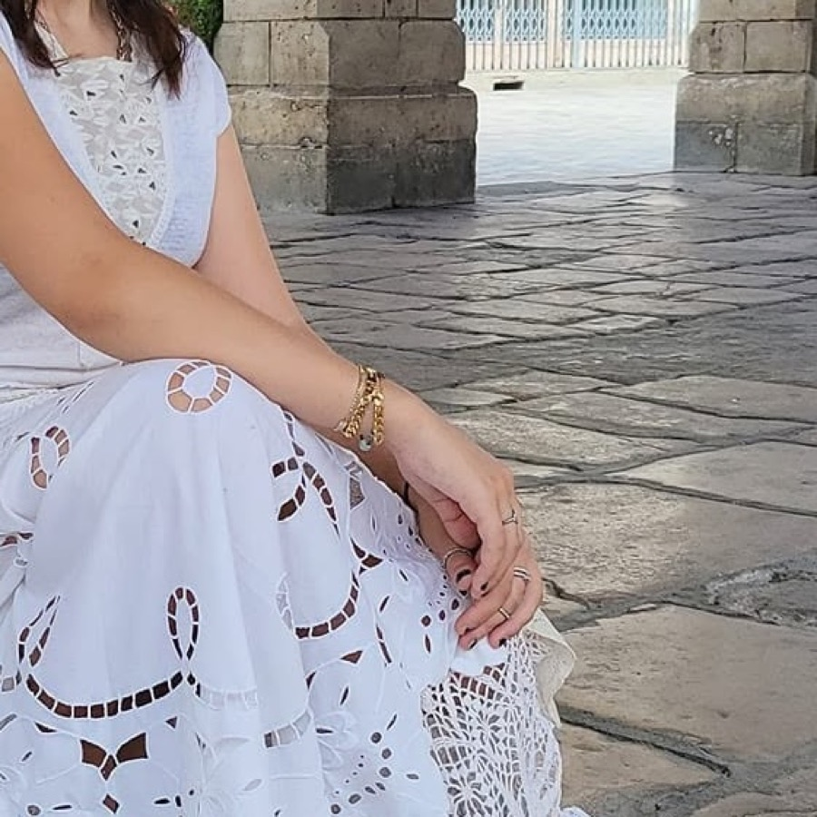
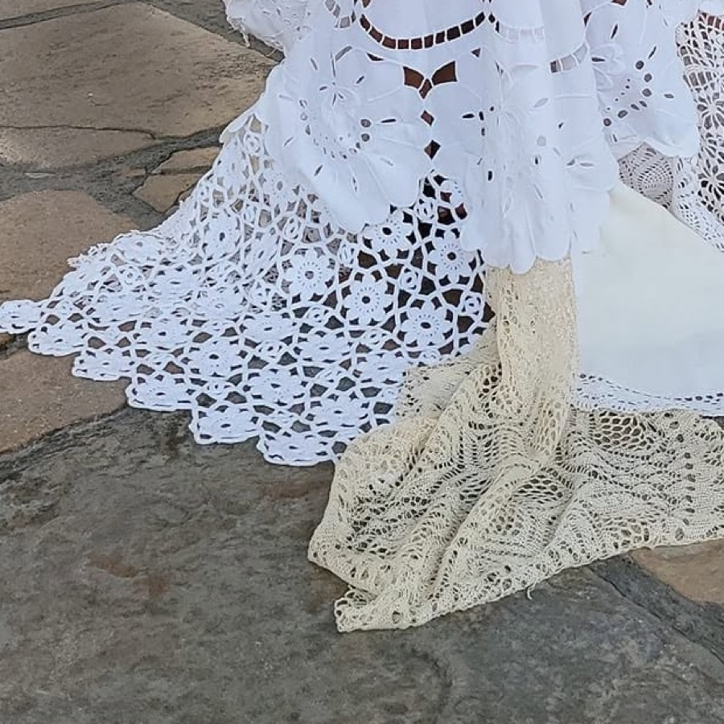
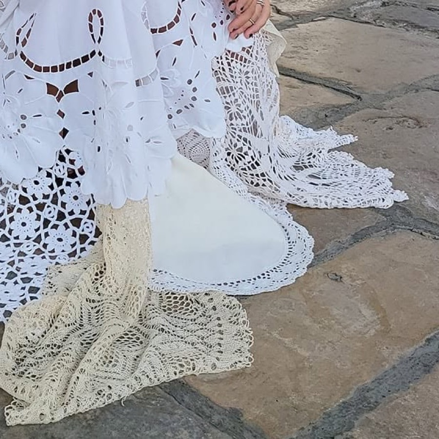

02
Voir la pièce
02
Voir la pièce
Jupe cercle, soie imprimée vert et or
Soie, doublée · Taille unique, taille élastiquée
145 € Pièce unique
Ouvert du mardi au samedi — 2, place de la Halle, Gramat





220 € Pièce unique
Un corsage sans manches en broderie anglaise, une jupe montée en dentelles et napperons chinés, et un volant de crochet écru qui traîne derrière. Cousue à l'atelier, au fond de la boutique.
Les dentelles qui la composent ont été trouvées une par une : la robe n'existe qu'en un seul exemplaire, et ne sera pas refaite à l'identique.
| Épaules | 38 cm |
|---|---|
| Poitrine | 88 cm |
| Taille | 72 cm |
| Longueur devant | 118 cm |
| Taille indicative | 38 |
Mesures prises à plat, vêtement fermé. Un doute sur la taille ? Appelez la boutique, Dolly vous répond.
Coton blanc, broderie anglaise, dentelles et napperons chinés, crochet écru pour le volant du bas. Doublure en coton.
Lavage à la main, à l'eau froide, sans essorage. Séchage à plat, à l'ombre. Repassage doux sur l'envers, sans vapeur sur la dentelle.
Retrait gratuit à la boutique, aux heures d'ouverture : du mardi au samedi, 10 h 30 – 12 h 30 et 14 h 30 – 18 h 30.
Expédition en France, emballée à la main. Le tarif s'affiche au panier, avant le paiement.
Vous avez 14 jours à partir de la réception pour changer d'avis, comme la loi le prévoit pour un achat à distance. La pièce doit revenir dans l'état où elle est partie.
Et si c'est juste une question de centimètres : passez à la boutique, Dolly la reprend à vos mesures.

L'atelier
Dolly a été créatrice de mode à Paris. Ses pièces sortent aujourd'hui de l'atelier installé au fond de la boutique, à Gramat — là où elle fait aussi vos ourlets.
À la boutique
02
Voir la pièce
Soie, doublée · Taille unique, taille élastiquée
145 € Pièce unique
 03
Voir la pièce
03
Voir la pièce
 04
Voir la pièce
04
Voir la pièce